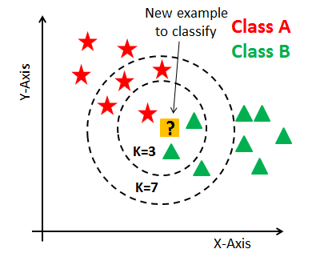

Chapter 5 KNN과 SVM
대표적인 분류모형인 KNN과 SVM에 대해 알아보도록 하겠습니다.
5.1 KNN
KNN 방법은 가장 가까운 점들, 즉 최근접 이웃들을 들여다보고 적합한 클래스를 결정하는 것입니다. \(K\)는 알고리즘이 얼마나 많은 이웃을 검사해야 하는지를 정하는 값이며, 만일 \(K=5\)였다면 5개의 가장 가까운 점들을 검사할 것입니다.

새로운 데이터가 들어온 경우, \(K=3\) 에서는 주위 3개 데이터를 바탕으로 Class B라 판단합니다. 그러나 \(K=7\) 에서는 주위 7개 데이터를 바탕으로 Class A라 판단합니다.
5.2 SVM
SVM은 두 개의 데이터 그룹을 가장 잘 나누는 분류기를 찾는 방법입니다. 이 중 관찰값과 Margin이 만나는 부분을 Support Vector라 하며, 두 그룹 가운데의 음영부분(Margin)을 최대화 하는 선을 찾습니다. 일부 데이터의 경우 그룹을 완벽하게 분할할 수 없으므로 약간의 오류를 허용하며, wider margin과 lower total error penalty 간의 트레이드 오프를 최적화한 것을 Soft Margin Classification이라 합니다.
5.3 데이터 불러오기 및 편집
국립 당뇨, 소화기 및 신장병 연구소에서 수집한 데이터를 사용하며, 532개 관찰값과 8개의 입력 피처 그리고 출력은 Y/N 을 갖습니다. 우리가 할 일은 인구 집단에서 당뇨를 앓거나 당뇨 위험 인자를 갖고 있는 개인들의 자료를 검사하고 당뇨병을 예측하는 것입니다.
MASS 패키지의 Pima.tr과 Pima.te 데이터를 사용하도록 합니다.
## 'data.frame': 200 obs. of 8 variables:
## $ npreg: int 5 7 5 0 0 5 3 1 3 2 ...
## $ glu : int 86 195 77 165 107 97 83 193 142 128 ...
## $ bp : int 68 70 82 76 60 76 58 50 80 78 ...
## $ skin : int 28 33 41 43 25 27 31 16 15 37 ...
## $ bmi : num 30.2 25.1 35.8 47.9 26.4 35.6 34.3 25.9 32.4 43.3 ...
## $ ped : num 0.364 0.163 0.156 0.259 0.133 ...
## $ age : int 24 55 35 26 23 52 25 24 63 31 ...
## $ type : Factor w/ 2 levels "No","Yes": 1 2 1 1 1 2 1 1 1 2 ...## 'data.frame': 332 obs. of 8 variables:
## $ npreg: int 6 1 1 3 2 5 0 1 3 9 ...
## $ glu : int 148 85 89 78 197 166 118 103 126 119 ...
## $ bp : int 72 66 66 50 70 72 84 30 88 80 ...
## $ skin : int 35 29 23 32 45 19 47 38 41 35 ...
## $ bmi : num 33.6 26.6 28.1 31 30.5 25.8 45.8 43.3 39.3 29 ...
## $ ped : num 0.627 0.351 0.167 0.248 0.158 0.587 0.551 0.183 0.704 0.263 ...
## $ age : int 50 31 21 26 53 51 31 33 27 29 ...
## $ type : Factor w/ 2 levels "No","Yes": 2 1 1 2 2 2 2 1 1 2 ...각 피처는 다음과 같습니다.
- npreg: 임신 횟수
- glu: 구강 포도당 내성 검사에서 혈장 포도당 농도 (혈당값)
- bp: 확장기 혈압
- Skin: 삼두근 피하 지방 두께
- bmi: 체질량 지수
- ped: 당뇨 가족력 함수
- age: 연령
- type: 당뇨병 여부, Yes 또는 No
당뇨병 여부에 따라 피처들의 특성을 살펴보도록 합니다.
library(ggplot2)
library(magrittr)
library(tidyr)
pima %>%
gather(key, value, -type) %>%
ggplot(aes(x = type, y = value)) +
geom_boxplot() +
facet_wrap( ~ key, scale = 'free')모든 데이터의 스케일이 다르므로 표준화를 해주어야 합니다. 표준화 방법에는 크게 두가지 방법이 있습니다.
최소-최대 정규화(min-max normalization): \(X_{normal} = \frac{X - min(x)}{max(x) - min(x)}\)
z-점수 표준화(z-score standardization): \(Z = \frac{X - \mu}{\sigma} = \frac{X - Mean(x)}{StdDev(x)}\)
이 중 scale() 함수를 이용하여 z-점수 표준화를 해주도록 합니다.
library(dplyr)
pima.scale = pima %>%
select(-8) %>%
scale() %>%
data.frame() %>%
mutate(type = pima$type)
head(pima.scale)## npreg glu bp skin bmi ped age type
## 1 0.4478 -1.1300 -0.2848 -0.1123 -0.3910 -0.4033 -0.7076 No
## 2 1.0516 2.3862 -0.1223 0.3628 -1.1321 -0.9867 2.1730 Yes
## 3 0.4478 -1.4204 0.8525 1.1229 0.4229 -1.0070 0.3146 No
## 4 -1.0619 1.4184 0.3651 1.3130 2.1813 -0.7081 -0.5217 No
## 5 -1.0619 -0.4526 -0.9346 -0.3974 -0.9432 -1.0738 -0.8005 No
## 6 0.4478 -0.7752 0.3651 -0.2074 0.3938 -0.3627 1.8943 Yes표준화된 데이터로 다시 그림을 나타내도록 합니다.
pima.scale %>%
gather(key, value, -type) %>%
ggplot(aes(x = type, y = value)) +
geom_boxplot() +
facet_wrap( ~ key, scale = 'free')다음으로 각 피처 간 상관관계를 살펴보도록 합니다.
npreg와 age, skin과 bmi는 상관관계가 높은 편이지만, 제대로 훈련되고 하이퍼 파라미터가 제대로 조정되었을 경우 이런 다중 공선성은 대체로 분류 방법에서는 문제가 되지 않습니다. 트레이딩 셋과 테스트 셋으로 데이터를 나누기 전에 라벨 피처의 비율을 점검하도록 합니다.
##
## No Yes
## 0.6673 0.3327No와 Yes의 비중이 대략 7:3 이므로 트레이딩 세트와 테스트 세트를 70/30 비율로 가르도록 합니다.
set.seed(502)
ind = sample(2, nrow(pima.scale), replace = TRUE, prob = c(0.7, 0.3))
train = pima.scale[ind == 1, ]
test = pima.scale[ind == 2, ]
str(train)## 'data.frame': 385 obs. of 8 variables:
## $ npreg: num 0.448 0.448 -0.156 -0.76 -0.156 ...
## $ glu : num -1.42 -0.775 -1.227 2.322 0.676 ...
## $ bp : num 0.852 0.365 -1.097 -1.747 0.69 ...
## $ skin : num 1.123 -0.207 0.173 -1.253 -1.348 ...
## $ bmi : num 0.4229 0.3938 0.2049 -1.0159 -0.0712 ...
## $ ped : num -1.007 -0.363 -0.485 0.441 -0.879 ...
## $ age : num 0.315 1.894 -0.615 -0.708 2.916 ...
## $ type : Factor w/ 2 levels "No","Yes": 1 2 1 1 1 2 2 1 1 1 ...## 'data.frame': 147 obs. of 8 variables:
## $ npreg: num 0.448 1.052 -1.062 -1.062 -0.458 ...
## $ glu : num -1.13 2.386 1.418 -0.453 0.225 ...
## $ bp : num -0.285 -0.122 0.365 -0.935 0.528 ...
## $ skin : num -0.112 0.363 1.313 -0.397 0.743 ...
## $ bmi : num -0.391 -1.132 2.181 -0.943 1.513 ...
## $ ped : num -0.403 -0.987 -0.708 -1.074 2.093 ...
## $ age : num -0.7076 2.173 -0.5217 -0.8005 -0.0571 ...
## $ type : Factor w/ 2 levels "No","Yes": 1 2 1 1 2 1 2 1 1 1 ...데이터 점들의 거리 또는 근접 정도를 계산할때는 디폴트로 유클리디안 거리를 사용합니다. 이는 단순히 두 점 A와 B 사이의 직선 거리를 나타냅니다.
\[Euclidean\ Distance(A, B) = \sqrt{\sum_{i=1}^{n}(p_i - q_i)^2}\]
이는 피처를 측정할 때 사용한 스케일에 매우 종속적이므로 스케일을 표준화하는 일은 매우 중요합니다.
5.3.1 KNN
KNN 기법을 사용할 때는 가장 적절한 파라미터(K)를 선택하는 일이 매우 중요합니다. K를 구하기 위해 caret 패키지를 이용하며, 실험을 위해 K의 입력값을 위한 격자망을 2부터 20까지 1씩 증가하도록 만듭니다. expand.grid() 함수와 seq() 함수를 이용하면 쉽게 만들 수 있습니다.
K를 선택하기 위해 caret 패키지의 trainControl() 함수에 교차 검증법을 이용해 control 이라는 오브젝트를 만든다.
caret 패키지의 train() 함수를 이용해 최적의 K 값을 구하는 오브젝트를 생성한다.
knn.train = train(type ~ ., data = train,
method = 'knn',
trControl = control,
tuneGrid = grid1)
print(knn.train)## k-Nearest Neighbors
##
## 385 samples
## 7 predictor
## 2 classes: 'No', 'Yes'
##
## No pre-processing
## Resampling: Cross-Validated (10 fold)
## Summary of sample sizes: 345, 347, 347, 347, 347, 346, ...
## Resampling results across tuning parameters:
##
## k Accuracy Kappa
## 2 0.7357 0.3684
## 3 0.7692 0.4352
## 4 0.7510 0.3987
## 5 0.7615 0.4066
## 6 0.7614 0.4140
## 7 0.7589 0.4042
## 8 0.7693 0.4277
## 9 0.7745 0.4372
## 10 0.7720 0.4360
## 11 0.7667 0.4194
## 12 0.7799 0.4478
## 13 0.7691 0.4133
## 14 0.7847 0.4587
## 15 0.7848 0.4555
## 16 0.7797 0.4391
## 17 0.7795 0.4416
## 18 0.7692 0.4105
## 19 0.7746 0.4255
## 20 0.7615 0.3998
##
## Accuracy was used to select the optimal model using the largest value.
## The final value used for the model was k = 15.위의 오브젝트를 호출하면 최적의 K가 출력됩니다. 최적의 K는 15이며, 이 때 정확도는 0.7795 입니다.
이제 위 모형을 class 패키지의 knn() 함수를 활용하여 테스트 데이터에 적용합니다. 해당 함수는 knn(train, test, cl(training set), k) 형태로 입력합니다.
## [1] No Yes No No No Yes Yes No No No Yes No No Yes No No Yes No
## [19] No Yes No No No No Yes No No No No Yes No No No Yes No Yes
## [37] No No No No No No Yes Yes Yes No No No No No No No No No
## [55] Yes Yes No No Yes No Yes Yes Yes No No No No No No No No No
## [73] No No Yes No Yes No No Yes Yes No No No Yes No No No No No
## [91] No No No Yes Yes No No No No No No No No No No No No No
## [109] No Yes Yes Yes No Yes No No Yes No Yes No Yes No Yes No Yes Yes
## [127] No No Yes No Yes No No No No No No Yes No No No Yes No Yes
## [145] Yes No Yes
## Levels: No Yes## Confusion Matrix and Statistics
##
## Reference
## Prediction No Yes
## No 76 27
## Yes 17 27
##
## Accuracy : 0.701
## 95% CI : (0.62, 0.773)
## No Information Rate : 0.633
## P-Value [Acc > NIR] : 0.0505
##
## Kappa : 0.33
##
## Mcnemar's Test P-Value : 0.1748
##
## Sensitivity : 0.817
## Specificity : 0.500
## Pos Pred Value : 0.738
## Neg Pred Value : 0.614
## Prevalence : 0.633
## Detection Rate : 0.517
## Detection Prevalence : 0.701
## Balanced Accuracy : 0.659
##
## 'Positive' Class : No
## 정확도가 0.7007로써, 기존 트레이닝 셋의 정확도인 0.7795에 비해 다소 감소하였습니다.
5.3.2 SVM
SVM 모형화를 위해서는 e1071 패키지의 tune.svm() 함수를 이용하도록 합니다.
library(e1071)
set.seed(123)
linear.tune = tune.svm(type ~ ., data = train,
kernel = 'linear',
cost = c(0.001, 0.01, 01, 1, 5, 10))
summary(linear.tune)##
## Parameter tuning of 'svm':
##
## - sampling method: 10-fold cross validation
##
## - best parameters:
## cost
## 0.01
##
## - best performance: 0.2
##
## - Detailed performance results:
## cost error dispersion
## 1 0.001 0.3192 0.04699
## 2 0.010 0.2000 0.04579
## 3 1.000 0.2076 0.06253
## 4 1.000 0.2076 0.06253
## 5 5.000 0.2103 0.06322
## 6 10.000 0.2103 0.06322cost는 데이터를 잘못 분류하는 선을 긋게 될 경우 얼마만큼의 비용을 지불할 것인지를 지정합니다. SVM은 1) 데이터를 한 가운데로 얼마나 잘 나누는지와 2) 잘못 구분한 점으로 인한 비용의 합을 최소화하는 선을 찾습니다. 결과적으로 SVM은 cost를 사용해 과적합 정도를 조절하게 됩니다.
위 예제에서 최적의 cost 함수는 0.01로 나타났고, 분류 오류 비율은 대략 20% 정도입니다.
best.linear = linear.tune$best.model
tune.test = predict(best.linear, newdata = test)
caret::confusionMatrix(tune.test, test$type)## Confusion Matrix and Statistics
##
## Reference
## Prediction No Yes
## No 82 24
## Yes 11 30
##
## Accuracy : 0.762
## 95% CI : (0.685, 0.828)
## No Information Rate : 0.633
## P-Value [Acc > NIR] : 0.000562
##
## Kappa : 0.461
##
## Mcnemar's Test P-Value : 0.042522
##
## Sensitivity : 0.882
## Specificity : 0.556
## Pos Pred Value : 0.774
## Neg Pred Value : 0.732
## Prevalence : 0.633
## Detection Rate : 0.558
## Detection Prevalence : 0.721
## Balanced Accuracy : 0.719
##
## 'Positive' Class : No
## 테스트 셋을 대상으로 정확도가 0.7619로써 knn 대비 약간 높은 정확도를 보입니다.